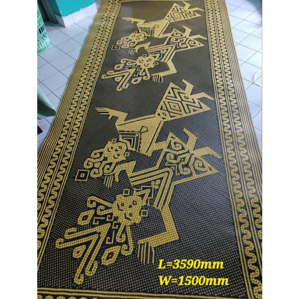
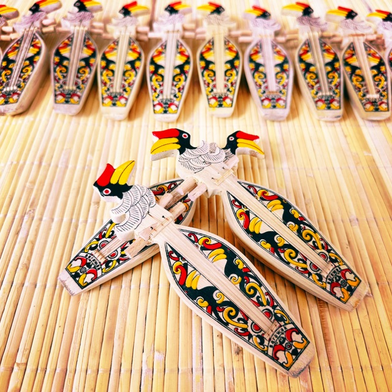

Aksesori
Handicraft Studio
Koleksi kraftangan yang autentik, kreatif dan sarat dengan warisan Borneo.
Temui anyaman, manik, tekstil dan cenderahati buatan komuniti tempatan untuk gaya hidup dan hadiah bermakna.
Kenapa pilih kraftangan di JakMiris?
- Setiap hasil menampilkan identiti budaya Sarawak
- Kualiti kerja tangan yang teliti dan bernilai seni
- Sesuai dijadikan koleksi, dekorasi atau hadiah istimewa
Pilihan
Kraftangan yang paling dicari
Anyaman
Bakul Rotan
Manik
Beg Manik Tradisi
Dekorasi
Bidayuh Mini Figure
Warisan
Gong Tawok
Pakaian
Topi Kenyah
Souvenir
Manik Borneo
Anyaman
Tambok Bidayuh
Koleksi Tradisional
Lebih banyak pilihan di bahagian bawah
Anyaman
Tikar Kelasah
Anyaman
Tikar Palembang

Rumah
Tikar Anyaman Klasik
Tekstil
Kain Batik Borneo
Warisan
Kain Pua Kumbu
Ukiran
Terabai Tradisional
Tekstil
Selampai Pua Kumbu

Hadiah